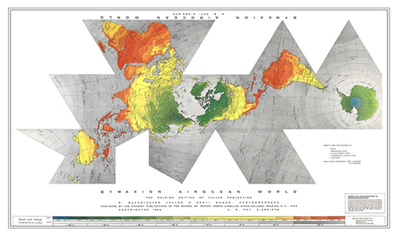
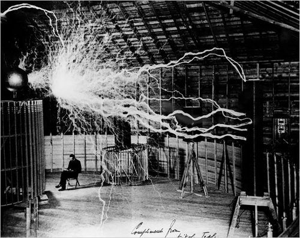
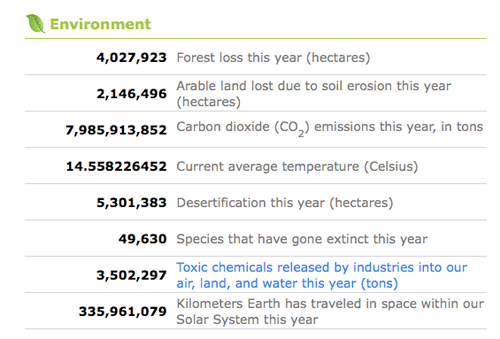

Welcome to Vol. 10 No. 5 of Design Science News, the e-bulletin of the Buckminster Fuller Institute
Design Science News brings you important updates about BFI’s programs and activities as well as news from around the world related to humanity’s option for success and comprehensive design science.Student team from MIT wins the $100K Buckminster Fuller Challenge prize for their innovative urban mobility system
Sustainable Personal Mobility and Mobility-on-Demand Systems (SPM/MoD, submitted by an interdisciplinary team of students at MIT has been selected as the winner of the prestigious 2009 Buckminster Fuller Challenge.
In addition to the winner, the distinguished jury selected a runner up and two honorable mentions from a pool of nearly 200 entries. Dreaming New Mexico (DNM, a Bioneers project with support from Google Earth's Outreach program, submitted by Kenny Ausubel and Peter Warshall was selected as the runner-up. DNM is based on the strategic premise that "dreaming the future can create the future." This project provides a systemic template, methodology and collaborative mapping tools for communities to engage in place-based and bioregional planning. Cycle for Health, submitted by Joseph Agoada, Dr. John Baptist Niwagaba, and Patrick Kayemba and Mukuru BioCentres, submitted by Umande Trust and GOAL Ireland, were awarded honorable mentions for their work in Africa to dramatically improve economic conditions and human health.
To learn more about the winner, the runner-up, and the honorable mentions visit: http://challenge.bfi.org
To read all the entries submitted to the 2009 Buckminster Fuller Challenge, visit the Idea Index.
Join us in Chicago June 5 - June 7 to celebrate the winner and runner up of the 2009 Buckminster Fuller Challenge!
The winner and runner up will be honored at a conferring ceremony on June 6th in Chicago, IL featuring a presentation of the winning strategy, remarks by the runner up, and a panel discussion with our jurors, moderated by Susan Szenasy, Editor in Chief of Metropolis Magazine. Immediately after the conferring ceremony we will host a reception and celebration at Chicago's famous Merchandise Mart featuring Fuller's iconic Fly's Eye Dome and a presentation by design innovator Bruce Mau.Click here to RSVP. We hope to see you in Chicago!
Get updates on BFI and our work on your favorite social networking sites

BFI has joined Facebook and Twitter! Keep up to date on all of our programs and events by connecting with us today!
» BFI on Facebook
» Challenge on Facebook
» BFI on Twitter
New edition of the Raleigh Dymaxion Map now available in our online store
This beautiful, newly printed edition of the Dymaxion map was first designed in Raleigh, North Carolina by Buckminster Fuller and BFI Board member Shoji Sadao. The ocean is colored light gray and the land masses are softly color-coded for mean annual temperatures. It is printed on 34 x 22 inch 80 lb. semi-gloss stock. Includes a two page info-sheet about the Dymaxion map and how it differs from other world maps.
» Find out more about the Dymaxion Map
» Purchase a copy from our online store
» Purchase a laminated or folded version from ODT Maps
TRENDS & PERSPECTIVES
Bendable concrete heals itself - just add water
Its not quite as advanced as Terminator technology. But a new concrete that can heal its own wounds may soon bring futuristic protection to bridges and roads.
Traditional concrete is brittle and is easily fractured during an earthquake or by overuse.
By contrast, the new concrete composite can bend into a U-shape without breaking. When strained, the material forms hairline cracks, which auto-seal after a few days of light rain.
Dry material exposed by the cracks reacts with rainwater and carbon dioxide in the air to form "scars" of calcium carbonate, a strong compound found naturally in seashells, said study co-author Victor Li of the University of Michigan in Ann Arbor.
The flexible material is just as strong after it heals, the study authors report. (Source: National Geographic)
Related:
» Self-healing spacecraft? Tiny tubes ooze epoxy
A battle to preseve a visionary's bold failure
In 1901, Nikola Tesla began work on a global system of giant towers meant to relay through the air not only news, stock reports and even pictures but also, unbeknown to investors such as J. Pierpont Morgan, free electricity for one and all. It was the inventor's biggest project, and his most audacious.
The first tower rose on rural Long Island and, by 1903, stood more than 18 stories tall. One midsummer night, it emitted a dull rumble and proceeded to hurl bolts of electricity into the sky. The blinding flashes, The New York Sun reported, "seemed to shoot off into the darkness on some mysterious errand."
But the system failed for want of money, and at least partly for scientific viability. Tesla never finished his prototype tower and was forced to abandon its adjoining laboratory.
Today, a fight is looming over the ghostly remains of that site, called Wardenclyffe - what Tesla authorities call the only surviving workplace of the eccentric genius who dreamed countless big dreams while pioneering wireless communication and alternating current. The disagreement began recently after the property went up for sale in Shoreham, N.Y.
A science group on Long Island wants to turn the 16-acre site into a Tesla museum and education center, and hopes to get the land donated to that end. But the owner, the Agfa Corporation, says it must sell the property to raise money in hard economic times. The company's real estate broker says the land, listed at $1.6 million, can "be delivered fully cleared and level," a statement that has thrown the preservationists into action. (Source: New York Times)
Related:
» Wizard: The life and times of Nikola Tesla
In Israel, solar power that won't need subsidies
In a country that ranks among the world's highest for average number of sunny days per year, solar energy has long been seen as a key natural resource here.
All the more fitting that on the eve of its Independence Day Israel launched what it said was the first solar farm of its kind, billed as a breakthrough that will make it affordable to reduce reliance on fossil fuels.
The technology, a system of rotating dishes made up of mirrors, is capable of harnessing up to 75 percent of incoming sunlight - roughly five times the capacity of traditional solar panels. In addition, using mirrors to reduce the number of photovoltaic cells needed, it makes the cost of solar energy roughly comparable to fossil fuels.
While this technology has been implemented elsewhere, Israeli start-up ZenithSolar - working in conjunction with Israel's Ben-Gurion University - is a pioneer in combining it with a water-based cooling system that increases the photovoltaic cells' efficiency and produces thermal energy to boot.
"We're the first to develop a cogeneration machine which will harness sunlight to produce thermal energy together with electrical energy at the same time," said Roy Segev, founder and CEO of ZenithSolar, at a launch party Monday at this kibbutz, or communal agricultural settlement, located on Israel's coastal plain east of Ashdod. This flagship plot of 16 dishes known as "Z20"s - which look like semiflattened satellite dishes with the texture of a disco ball - will generate about half of the total energy needs of this community of some 200 families.
Israel has long sought to make the most of its location: the Negev Desert, not far from here, gets about 330 sunny days in a year. Israel recruited its first solar-energy pioneer in 1949 just after the state was founded, and Israelis have have been using solar panels on their roofs to heat water for decades - more than 1 million households in a nation of 7 million have such setups, according to a recent Business Week report. (Source: Christian Science Monitor)
Related:
» MIT team plays with fire to create cheap energy
RESOURCES
Visualizing the grid
The U.S. electric grid is a complex network of independently owned and operated power plants and transmission lines. Aging infrastructure, combined with a rise in domestic electricity consumption, has forced experts to critically examine the status and health of the nation's electrical systems.
NPR has created this great tool to view the U.S. energy grid, the sources of power that feed it, and the proposed expansions over the next half-century.
Fuller's Earth: A Day With Buckminster Fuller and the Kids being re-released as part of the 'Classics in Progressive Education' series
A brilliant portrait of a dynamic teacher, Fuller's Earth by Richard J. Brenneman with a new forward by National Book Award and the Robert F. Kennedy Book Award recipient Herb Kohl, will be an inspiration to progressive educators today. Toward the end of his life, the visionary American philosopher, inventor, architect, mathematician, and poet Buckminster Fuller was asked to explain to a group of children his vision of how the universe works. The book that resulted from this encounter is not only the most straightforward exposition available of Bucky's radical worldview but also perhaps the most lovable and personal portrait ever produced of the man who has been called "the planet's friendly genius."
Available now for pre-order from Amazon.com
Worldometers
Worldometers is part of the Real Time Statistics Project, which is managed by an international team of developers, researchers, and volunteers with the goal of making world statistics available in a thought-provoking and time relevant format to a wide audience around the world. Chief project coordinator is currently Sir Thomasson.
Sources are carefully selected to include only data published by the most reputable organizations and statistical offices in the world.
The counters that display the real-time numbers are based on Worldometers' algorithm that processes the latest and most accurate statistical data available together with its estimated progression to compute the current millisecond number to be displayed on each counter based on the specific time set on each visitor’s computer clock.
13 things that do not make sense
A great list and explanation of, well, 13 things that do not make sense.EVENTS
Sixth Annual Games for Change Festival
This May, the only festival dedicated to the exciting new movement of Digital Games for Social Change will explore real-world impact, the latest games, and funding strategies. Hosted in New York City by Parsons The New School for Design, the 6th annual Games for Change Festival will take place May 27 - 29, 2009. The Annual Games for Change Festival brings together the world's leading foundations, NGOs, game-makers, academics, and journalists to explore how best to harness this incredibly powerful medium to help address the most critical issues of our day, from poverty, climate change, global conflicts, to human rights. Every year, the festival doubles in size and brings in new, high-impact partners.
The festival includes 3 exciting days of panels, keynotes and brainstorming sessions, as well as funders' meetings, press briefings, a private journalists dinner, an in-conference game, birds-of-a-feather gatherings and the usual excellent networking opportunities. This year we'll also be featuring the first-ever Newsgame Award at the Expo Night on May 28th, sponsored by the Knight Foundation, an evening games Expo and reception where attendees can play these new games first-hand and watch the awards ceremony for the best news games.
Called "the Sundance of video games" for "socially-responsible game-makers" we're promoting a new genre of video game - games to change the world – for the better.
To unsubscribe from this newsletter, send email to this address.
To never receive email from The Buckminster Fuller Institute, send email to this address.
This email is sent from:
The Buckminster Fuller Institute
{domain.address}